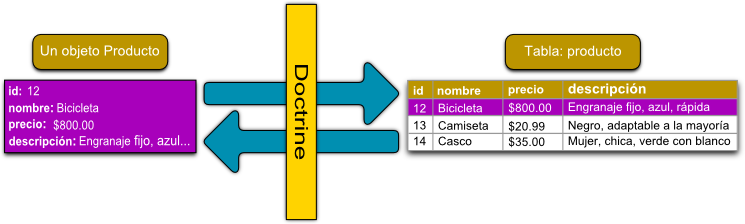

Model
{: .no_toc }
Taula de continguts
{: .no_toc .text-delta .nocount }
- TOC
Introducció
Symfony no disposa de cap mòdul que s'encarregue de la capa de persistència. Per aquest motiu, alguns desenvolupadors diuen que no és un framework MVC pur.
Per a aquesta tasca Symfony s'integra amb eines de tercers, com el ORM Doctrine.
Doctrine
Doctrine és un Object Relational Mapping. La finalitat d'un ORM és la de proporcionar una capa orientada a objectes sobre d'una base de dades relacional, de manera que les files o registres de les taules siguen tractats com a objectes.
Les associacions que hi ha entre aquests objectes es correspon amb les relacions entre les taules de la base de dades.

Característiques dels ORM
Entre les característiques destaquem: * Fan independent l'aplicació de l'SGBD utilitzat. * És el propi ORM qui construeix la consulta (SQL) adequada a l'SGBD que en cada moment. * Els elements comuns a qualsevol ORM són les entitats. * Les metadades defineixen les relacions entre les entitats i la base de dades. * És un producte molt potent, i per això, bastant complex
La documentació oficial és molt completa: Documentació de Doctrine
No ho estudiarem en profunditat.
Veurem la major part dels conceptes bàsics imprescindibles per fer ús de Doctrine2 en una aplicació construïda en Symfony.
Exemples
Aquestos exemples estan extrets de l'aplicació demo de Symfony
/*
* This file is part of the Symfony package.
*
* (c) Fabien Potencier <fabien@symfony.com>
*
* For the full copyright and license information, please view the LICENSE
* file that was distributed with this source code.
*/
namespace App\Entity;
use Doctrine\Common\Collections\ArrayCollection;
use Doctrine\Common\Collections\Collection;
use Doctrine\ORM\Mapping as ORM;
use Symfony\Bridge\Doctrine\Validator\Constraints\UniqueEntity;
use Symfony\Component\Validator\Constraints as Assert;
/**
* @ORM\Entity(repositoryClass="App\Repository\PostRepository")
* @ORM\Table(name="symfony_demo_post")
* @UniqueEntity(fields={"slug"}, errorPath="title", message="This title was already used in another blog post, but they must be unique.")
*
* Defines the properties of the Post entity to represent the blog posts.
*
* See https://symfony.com/doc/current/doctrine.html#creating-an-entity-class
*
* Tip: if you have an existing database, you can generate these entity class automatically.
* See https://symfony.com/doc/current/doctrine/reverse_engineering.html
*
* @author Ryan Weaver <weaverryan@gmail.com>
* @author Javier Eguiluz <javier.eguiluz@gmail.com>
* @author Yonel Ceruto <yonelceruto@gmail.com>
*/
class Post
{
/**
* Use constants to define configuration options that rarely change instead
* of specifying them under parameters section in config/services.yaml file.
*
* See https://symfony.com/doc/current/best_practices.html#use-constants-to-define-options-that-rarely-change
*/
public const NUM_ITEMS = 10;
/**
* @var int
*
* @ORM\Id
* @ORM\GeneratedValue
* @ORM\Column(type="integer")
*/
private $id;
/**
* @var string
*
* @ORM\Column(type="string")
* @Assert\NotBlank
*/
private $title;
/**
* @var string
*
* @ORM\Column(type="string")
*/
private $slug;
/**
* @var string
*
* @ORM\Column(type="string")
* @Assert\NotBlank(message="post.blank_summary")
* @Assert\Length(max=255)
*/
private $summary;
/**
* @var string
*
* @ORM\Column(type="text")
* @Assert\NotBlank(message="post.blank_content")
* @Assert\Length(min=10, minMessage="post.too_short_content")
*/
private $content;
/**
* @var \DateTime
*
* @ORM\Column(type="datetime")
*/
private $publishedAt;
/**
* @var User
*
* @ORM\ManyToOne(targetEntity="App\Entity\User")
* @ORM\JoinColumn(nullable=false)
*/
private $author;
/**
* @var Comment[]|ArrayCollection
*
* @ORM\OneToMany(
* targetEntity="Comment",
* mappedBy="post",
* orphanRemoval=true,
* cascade={"persist"}
* )
* @ORM\OrderBy({"publishedAt": "DESC"})
*/
private $comments;
/**
* @var Tag[]|ArrayCollection
*
* @ORM\ManyToMany(targetEntity="App\Entity\Tag", cascade={"persist"})
* @ORM\JoinTable(name="symfony_demo_post_tag")
* @ORM\OrderBy({"name": "ASC"})
* @Assert\Count(max="4", maxMessage="post.too_many_tags")
*/
private $tags;
public function __construct()
{
$this->publishedAt = new \DateTime();
$this->comments = new ArrayCollection();
$this->tags = new ArrayCollection();
}
Podeu consultar la resta d'entitats ací: https://github.com/symfony/demo/tree/master/src/Entity